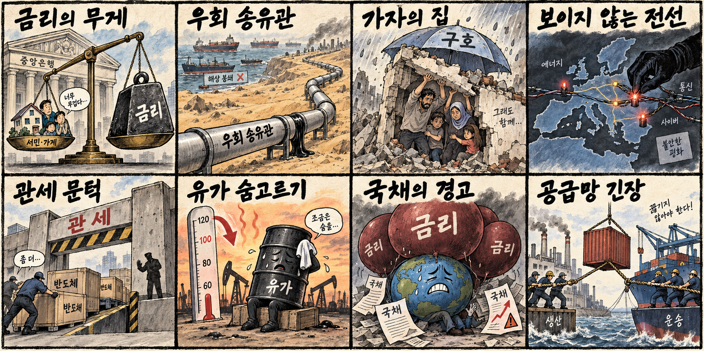
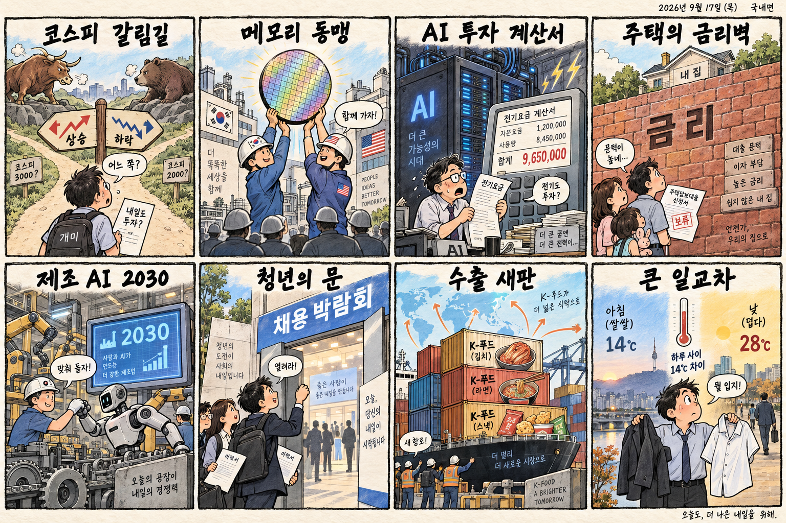

01
코인베이스 · 172.55→164.51달러 · -4.66%
내용요약 시가 대비 4.66% 하락해 조사 종목 가운데 큰 낙폭을 보였습니다.
예상여파 가상자산 가격과 고금리·규제 변화에 민감해 변동성이 확대될 수 있습니다.
MORNING_BRIEFING_20260917
작성 시각: 2026-09-17 06:40 KST · 직전 미국 정규장과 2026-09-17 KST 당일 공개 기사 기준
직전 미국 정규장인 9월 16일 뉴욕증시는 연준의 금리 인상과 추가 긴축 경계로 다우 -1.21%, S&P 500 -0.45%, 나스닥 -0.01%를 기록했습니다. 장기금리 부담은 경기민감주와 고평가 성장주의 상단을 누르지만, 나스닥의 상대적 방어력은 AI·소프트웨어 내부의 선별 흐름을 시사합니다. 오늘 한국 증시는 전일 반등의 연속성보다 환율·외국인 수급 확인이 우선입니다.
| 지수 | 종가 | 등락률 | 한국 증시 시사점 |
|---|---|---|---|
| 다우존스 | 51,461.90 | -1.21% | 긴축 경계 속 업종별 차별화 |
| S&P 500 | 7,551.81 | -0.45% | 긴축 경계 속 업종별 차별화 |
| 나스닥 종합 | 25,978.43 | -0.01% | 긴축 경계 속 업종별 차별화 |
연준 금리 인상과 추가 긴축 우려가 경기민감주를 압박했습니다.
전일 6,717.97로 반등했지만 시가 변동성과 추세 확인이 남았습니다.
사우디 우회 송유관 재가동 전망이 공급 불안을 일부 낮췄습니다.
수급·컨센서스·보정 표본 문턱을 모두 통과한 후보가 없습니다.
9월 16일 보고서는 필수 수급·컨센서스·30건 이상 보정 표본 부족으로 공식 추천을 내지 않았습니다. 게시 당시 판단을 유지하며 사후 종목을 추가하지 않습니다.
| 시장 | 종가 | 등락률 | 기준 |
|---|---|---|---|
| KOSPI | 6,717.97 | +1.37% | 9월 16일 · 시가 대비 +1.61% |
| KOSDAQ | 815.98 | +0.44% | 9월 16일 · 시가 대비 +0.94% |
| 다우존스 | 51,461.90 | -1.21% | 미국 9월 16일 정규장 |
| S&P 500 | 7,551.81 | -0.45% | 미국 9월 16일 정규장 |
| 나스닥 종합 | 25,978.43 | -0.01% | 미국 9월 16일 정규장 |
슈퍼마이크로컴퓨터가 시가 대비 2.76% 상승했습니다.
팔란티어와 오라클이 각각 2%대 올랐습니다.
국제유가 하락과 함께 엑슨모빌이 시가 대비 2.34% 내렸습니다.
코인베이스와 보잉이 각각 4% 안팎 하락했습니다.
내용요약 시가 대비 4.66% 하락해 조사 종목 가운데 큰 낙폭을 보였습니다.
예상여파 가상자산 가격과 고금리·규제 변화에 민감해 변동성이 확대될 수 있습니다.
내용요약 시가 대비 3.92% 하락하며 산업재 약세를 주도했습니다.
예상여파 금리와 경기 기대 변화가 수주 산업의 가치평가와 자금조달 비용에 영향을 줄 수 있습니다.
내용요약 시가 대비 3.40% 내리며 반도체 장비주가 약세를 보였습니다.
예상여파 AI 투자 확대 기대와 별개로 장비 발주 주기와 밸류에이션 부담을 확인할 필요가 있습니다.
내용요약 시가 대비 2.76% 상승해 지수 대비 상대강도를 보였습니다.
예상여파 AI 서버 수요 기대는 유효하지만 단일 거래일 반등 뒤 추격 위험은 남습니다.
내용요약 시가 대비 2.32% 오르며 소프트웨어주 가운데 강세였습니다.
예상여파 AI 소프트웨어 수요의 방어력을 보여주지만 높은 기대치와 금리 민감도는 부담입니다.
KOSPI는 전일 6,717.97로 전일 종가 대비 +1.37%, 시가 대비 +1.61% 상승했습니다. 삼성전자와 SK하이닉스도 전일 시가 대비 각각 반등해 대형 반도체의 투매는 진정됐습니다. 그러나 미국의 추가 긴축 경계와 다우 급락은 외국인 수급에 부담이며, 국제유가 하락은 에너지주에는 역풍인 반면 수입물가에는 완충 요인입니다. 개장 후 KOSPI 6,700선 유지, 원·달러 환율, 외국인 선물 수급을 확인하기 전에는 갭 상승 추격을 피하는 편이 합리적입니다.
오늘은 추천 없음 — 현금 관망
06:30 KST 기준 당일 시가가 형성되지 않았고, 전일까지의 외국인·기관 수급, 최신 컨센서스 변화, 30건 이상 유사 조건 보정 확률, 예상 손익비 1.5를 동시에 검증한 후보가 없습니다. 유가·금리·환율 동반 부담 국면에서 종합점수와 상승확률을 임의로 만들지 않습니다.
관심 연결종목 에너지·사이버보안·전력 인프라·고용량 메모리는 관찰 대상일 뿐 매수 추천이 아닙니다. 장전 예상 갭이 크면 추격하지 않습니다.
전일 반등의 지지력과 외국인 현물·선물 동반 수급을 봅니다.
미 국채금리와 달러의 아시아장 반응을 확인합니다.
우회 송유관 기대의 지속성과 정유·운송주 차별화를 점검합니다.
삼성전자·SK하이닉스의 거래량과 외국인 수급을 확인합니다.
핵심 요약: AI 경쟁의 초점이 칩 성능만이 아니라 변압기·현지 생산·규제·제조 현장 도입으로 넓어지고 있습니다. 대규모 투자 기대와 함께 전력망, 준법 비용, 상용화 성과를 구분해 봐야 합니다.
내용요약 히타치가 AI 데이터센터 전력 수요에 대응해 미국 미시시피에 5억달러 규모 변압기 공장을 건설한다는 당일 보도입니다.
예상여파 전력망 병목이 장기화하면 변압기·전력기기와 데이터센터 전력 인프라 투자가 AI 설비 확장의 핵심 축이 될 수 있습니다.
내용요약 뉴욕시가 AI 규제 특별 청문회를 열고 오픈AI와 앤트로픽에 출석을 요청했다는 당일 보도입니다.
예상여파 도시 단위의 규제 논의가 투명성·안전 의무를 강화해 생성형 AI 사업자의 준법 비용과 제품 출시 절차에 영향을 줄 수 있습니다.
내용요약 삼성전자가 엔비디아 대항마로 거론되는 네덜란드 AI칩 스타트업에 공동 투자한다는 당일 보도입니다.
예상여파 AI 가속기 생태계 다변화는 메모리·파운드리 협력 기회를 넓히지만 상용화와 고객 확보를 지켜봐야 합니다.
내용요약 SK하이닉스가 인텔과 미국 내 메모리 생산을 논의한다는 당일 보도입니다.
예상여파 현지 생산 협력이 구체화하면 미국 공급망 대응력은 높아질 수 있으나 투자 규모와 수익성 조건이 중요합니다.
내용요약 정부가 제조업 경쟁력 강화를 위한 제조AI 2030 전략을 공개했다는 당일 보도입니다.
예상여파 산업 AI의 현장 도입이 빨라질 경우 로봇·센서·산업 소프트웨어 수요가 늘 수 있지만 실증 성과가 관건입니다.
핵심 요약: 연준의 추가 긴축 경계가 금융시장을 누르는 가운데 사우디 우회 송유관 기대가 유가를 진정시켰습니다. 가자 민간 피해와 유럽 내 파괴 공작 의혹은 지정학적 위험이 여전히 높음을 보여줍니다.
내용요약 연준의 금리 인상과 추가 긴축 우려로 다우가 1.21% 하락했다는 당일 마감 보도입니다.
예상여파 높은 정책금리가 이어지면 글로벌 위험자산의 할인율과 달러 조달 부담이 함께 높아질 수 있습니다.
내용요약 사우디 동서송유관이 수일 내 재가동될 수 있다는 전망에 국제유가가 3% 급락했다는 당일 보도입니다.
예상여파 우회 공급이 현실화하면 에너지 가격 충격이 완화될 수 있지만 중동전쟁 장기화 위험은 남습니다.
내용요약 폭격으로 반파된 가자지구 아파트가 무너지는 등 민간 피해가 이어진다는 당일 보도입니다.
예상여파 인도주의 위기 심화는 휴전 압력을 높이는 동시에 지역 불안과 재건 비용을 키울 수 있습니다.
내용요약 러시아가 우크라이나 지원을 위축시키기 위해 유럽 곳곳에서 파괴 공작을 벌인다는 당일 보도입니다.
예상여파 유럽의 안보·기반시설 경계가 강화되고 우크라이나 지원을 둘러싼 정치적 긴장이 커질 수 있습니다.
내용요약 미국에서 반도체를 생산하면 관세를 면제하는 방안이 보도됐습니다.
예상여파 현지 생산 유인은 커질 수 있지만 글로벌 반도체 기업의 설비 배치와 공급망 비용 재산정이 불가피합니다.

핵심 요약: KOSPI 반등 뒤 추세 확인이 필요한 가운데 반도체 공급망 협력과 제조 AI, K푸드 수출이 산업 성장 의제로 부상했습니다. 고금리 주택 공급과 큰 일교차는 생활경제의 부담입니다.
내용요약 코스피가 아직 바닥을 확인하지 못했다는 시장 전문가의 경고와 시나리오를 다룬 당일 보도입니다.
예상여파 전일 반등만으로 추세 전환을 단정하기보다 금리·환율과 외국인 수급을 함께 확인할 필요가 있습니다.
내용요약 5조달러 규모 AI 투자에 대한 기대와 파멸론이 엇갈리며 한국 반도체 업계의 민감도가 커진다는 당일 보도입니다.
예상여파 AI 설비투자의 실제 집행 속도와 수익화가 국내 메모리 수요와 밸류에이션을 좌우할 수 있습니다.
내용요약 고금리가 주택 공급의 사업성을 낮추고 있어 획일적 대출 규제를 손봐야 한다는 당일 사설입니다.
예상여파 금융 규제 조정은 공급 여건을 개선할 수 있지만 가계부채와 지역별 과열을 함께 관리해야 합니다.
내용요약 K푸드가 한류 인기에만 기대지 않고 세계인의 일상식으로 자리 잡아야 한다는 수출 전략 인터뷰입니다.
예상여파 현지 유통망·제품 표준화와 반복 구매가 식품 수출의 지속 가능성을 좌우할 수 있습니다.
내용요약 아침 최저 11도, 낮 최고 30도 안팎으로 일교차가 최대 15도에 이른다는 당일 기상 보도입니다.
예상여파 출퇴근 복장과 건강 관리가 필요하며 제주 강풍·비와 내륙 안개에도 유의해야 합니다.
